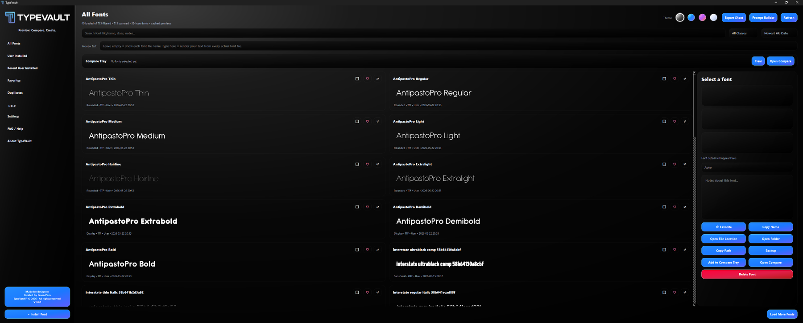
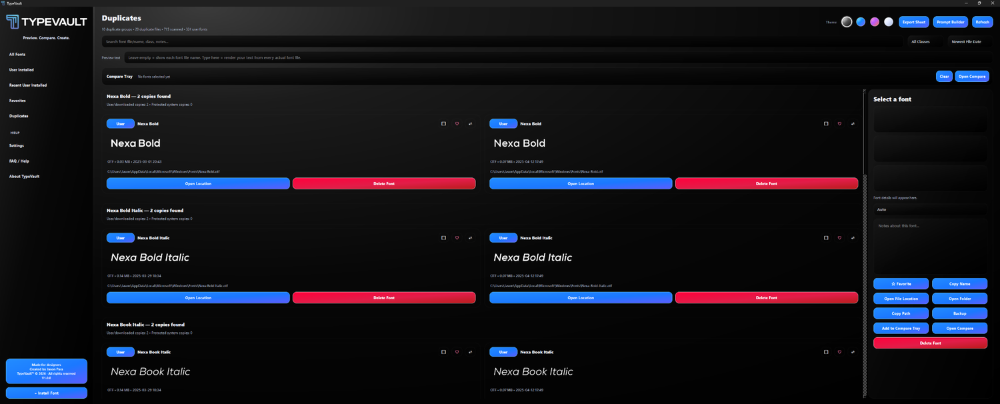
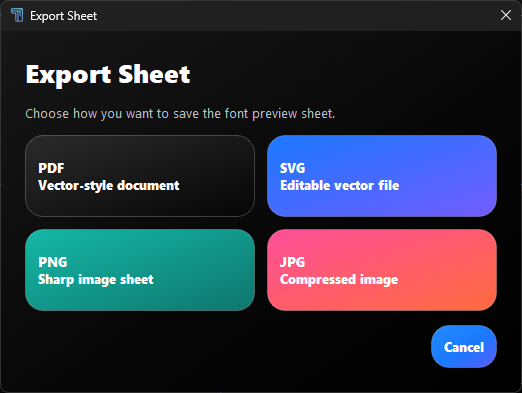
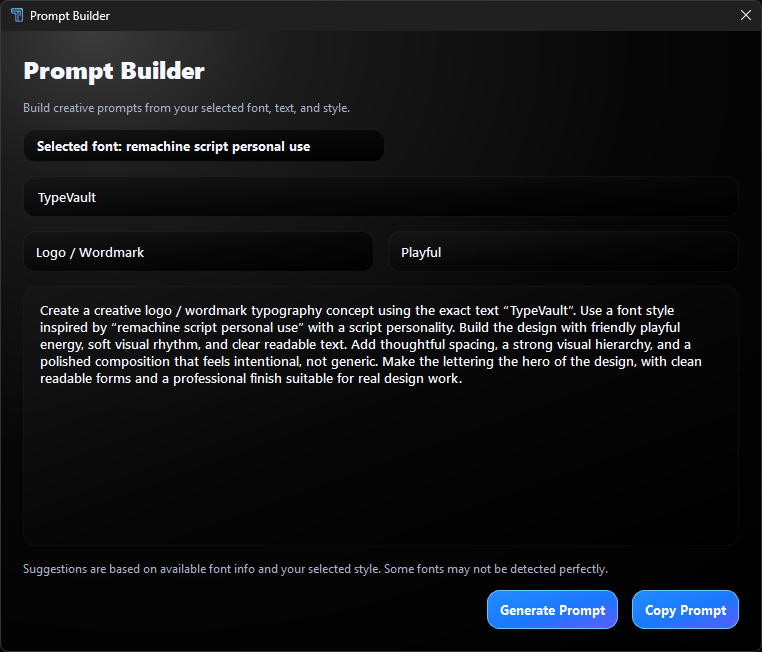

Aa
Preview fonts faster
Browse installed fonts with live previews, search, filters, and clean font cards made for designers.
TypeVault turns your messy font library into a clean creative workspace for previewing, comparing, exporting, and building font-based prompt ideas faster.
TypeVault App V1.0.0

Find the right font quicker, compare styles properly, and prepare cleaner font previews for clients.
Browse installed fonts with live previews, search, filters, and clean font cards made for designers.
Add fonts to compare and test the same text before choosing the right style.
Export font preview sheets as PDF, SVG, PNG or JPG for clean presentations.
Build typography prompt ideas based on selected font style, text and mood.
Version-check support is ready so users can find the newest TypeVault release.
Spot duplicate font copies and manage messy font folders more easily.
Search your installed fonts and preview them with real text.
Drop your best options into Compare Tray and test them side by side.
Create clean font sheets for clients or your own design direction.
Use Prompt Builder to turn font style into better typography prompts.
Real screenshots from TypeVault V1.0.0, arranged to show the main tools clearly.

Keep your font library cleaner by spotting repeated copies and opening their locations.

Choose format, text, and output path before exporting.

Quickly turn font choices into creative prompt directions.
TypeVault can check an online version file and send users to the download page when a newer release is available.
{
"latest_version": "1.0.0",
"download_url": "#download",
"notes": "Initial public release."
}
Quick notes about how TypeVault works, what it can do, and what users should understand before managing fonts.
TypeVault is a Windows font manager made for designers to preview fonts, compare styles, export preview sheets, and build font-based prompt ideas faster.
User Installed fonts are fonts added to your Windows user account. System fonts are installed at Windows/system level and may be used by Windows or other apps.
Some fonts are protected by Windows or required by applications. TypeVault avoids forcing unsafe changes that could affect your system or other software.
Some design apps cache fonts until they are restarted. In some cases, Windows or the app may need a restart before the font list refreshes properly.
You can drag supported font files into TypeVault to install them faster. Always make sure you have the right license to use the fonts you install.
The Compare Tray lets you collect selected fonts and preview them together using the same text, making it easier to choose the right typeface.
Export Sheet creates a clean font preview document or image that you can review yourself or send to clients.
Prompt Builder helps create typography prompt ideas based on your selected font, text, and chosen style. It is offline/template-based and does not use AI by itself.
No. Suggestions may not always be 100% accurate, especially with random downloaded fonts or fonts with unclear metadata.
TypeVault is provided as a design utility. You are responsible for how you use the software, the fonts you install or delete, your own backups, and making sure you have the proper font licenses. The creator is not responsible for font licensing issues, data loss, system changes, or misuse of the software.
Download the Windows version and start previewing, comparing and exporting your fonts in a cleaner way.
Replace the download button link with your GitHub Release EXE/ZIP link when ready.